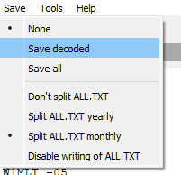

_______________________________________________all.txtI occasionally create a copy and rename it to indicate the date range, then delete all.txt. WSJT-x creates a new one at that point containing activity from that date/time forward. This helps keep the file size down. I found that using notepad or Word on even these reduced size files takes a LONG time to load and search. Notepad, as recommended below, is pretty quick.Brian NT6F
On Thursday, December 7, 2023 at 11:16:36 AM PST, ALAN CHILDS via Chat <chat@ncdxc.org> wrote:_______________________________________________This is a small tidbit that most of you already know.In WSJT-XYou can always go into text document and look things up.It records everything that goes on while you are in wsjt.So you open file, go to log directory and then use word pador something like it.It might be useful to find out what has happened with a contact.Alan, K6IPM
Chat mailing list
Chat@ncdxc.org
http://mail.ncdxc.org/mailman/listinfo/chat_ncdxc.org
Chat mailing list
Chat@ncdxc.org
http://mail.ncdxc.org/mailman/listinfo/chat_ncdxc.org